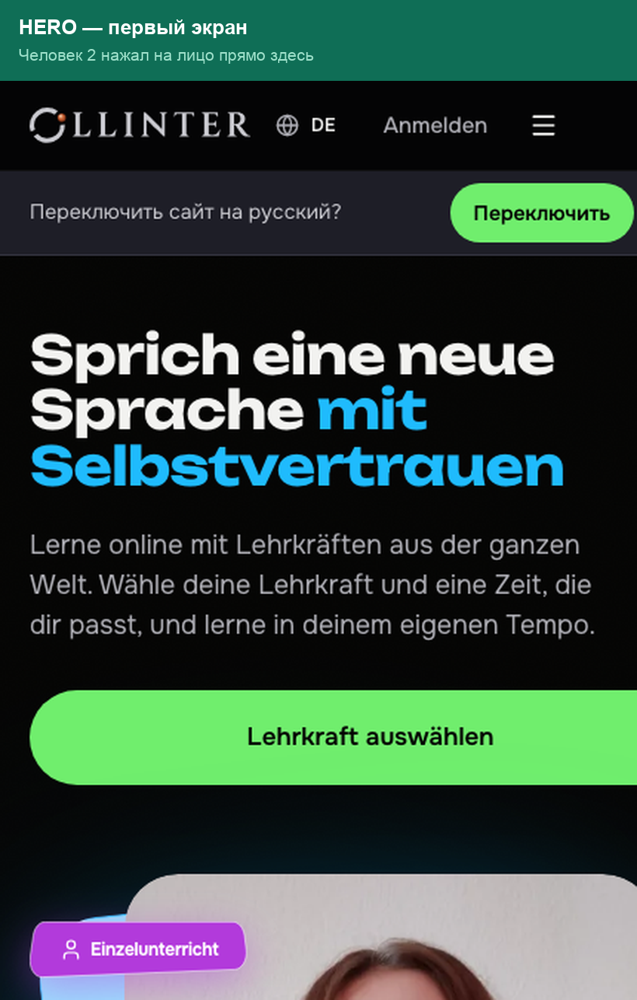
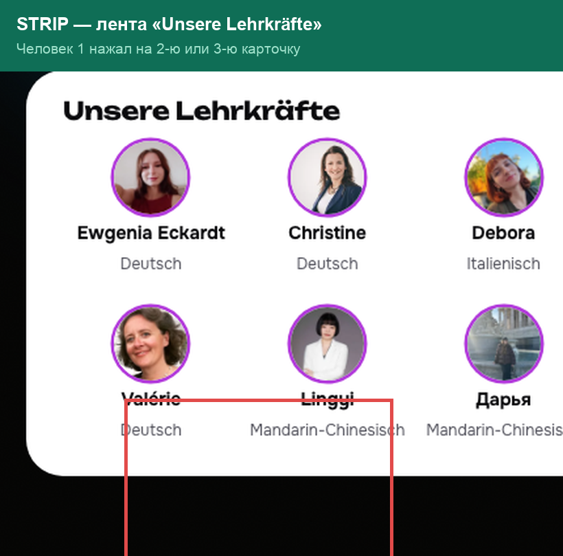

Кто пришёл с рекламы на учеников
22 ноября 2026 · кампания Leads_TeachersClick · страница ollinter.com/de/for/languages
С рекламы зашло пять человек, все с телефона.
Трое нажали на преподавателя и открыли его карточку. В карточке не нажал никто.
Двое ушли с первого экрана. До брони не дошёл никто.
Про время на сайте. Его нет и взять негде. Админка Антона не записывает ни время захода,
ни сколько человек пробыл на странице — в карточке визита прямо написано
«no time of day». Система хранит только последовательность кликов и блок, куда нажали.
Чтобы появилось время, Антону нужно дописать это в аналитику.
Что за блоки, по которым жали
Страница разбита на именованные куски, и админка пишет, в каком из них был клик. Вот те три, которые встретились сегодня.



Пять человек по порядку
Человек 1
- Открыл страницу
- Пролистал до ленты преподавателей и нажал на вторую или третью карточку
- Открыл карточку преподавателя и не нажал там ничего
Самый тёплый. Сам долистал до лиц, выбрал конкретного человека — и встал.
Человек 2
- Открыл страницу
- Нажал на лицо сразу на первом экране, не прокручивая
- Открыл карточку преподавателя, ноль кликов
Отреагировал мгновенно и так же мгновенно остановился.
Человек 3
- Открыл страницу
- Долистал до подборки с ценами и нажал на первую — Ewgenia, 19 €
- Открыл карточку преподавателя, ноль кликов
Дошёл дальше всех по странице. Финал тот же.
Человек 4
- Открыл страницу, не нажал ничего, закрыл
Человек 5
- Открыл страницу, не нажал ничего, закрыл
Сводка
| Шаг | Человек | Доля |
|---|---|---|
| Зашли с рекламы | 5 | 100 % |
| Нажали на преподавателя | 3 | 60 % |
| Открыли карточку преподавателя | 3 | 60 % |
| Сделали хоть что-то в карточке | 0 | 0 % |
| Начали бронь | 0 | 0 % |
Главное
- Первая половина пути работает. Шестеро из десяти нажимают на лицо — причём из разных мест страницы: с первого экрана, из ленты, из подборки с ценами. Людям интересны преподаватели.
- Обрыв ровно на карточке преподавателя. Три человека туда зашли, и ни один не сделал ни единого клика. Ни кнопки, ни календаря, ни прокрутки с действием.
- Все пятеро — с телефона. Значит и смотреть карточку надо с телефона, а не с компьютера.
Что проверить дальше
- Открыть карточку преподавателя с телефона и посмотреть: видна ли кнопка брони без прокрутки, есть ли свободные окна на ближайшие дни, понятна ли цена.
- Админка в разделе Campaigns сама считает: на этой неделе свободных преподавателей 10. Если у того, кого выбрал человек, окон нет — нажимать просто нечего.